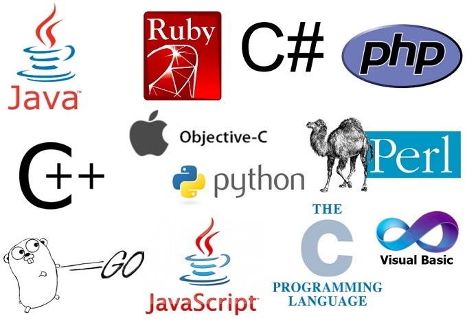

Software is often used to describe all the functional aspects of a computer that do not refer to its physical components (hardware). Scripts, applications, programs and a set of instructions are all terms often used to describe software.
Below are the list of the technologies I learnt :)Front-end web development is the development of the graphical user interface of a website, through the use of HTML, CSS, and JavaScript, so that users can view and interact with that website.

Back-end development means working on server-side software, which focuses on everything you can't see on a website. Back-end developers ensure the website performs correctly, focusing on databases, back-end logic, application programming interface (APIs), architecture, and servers.
